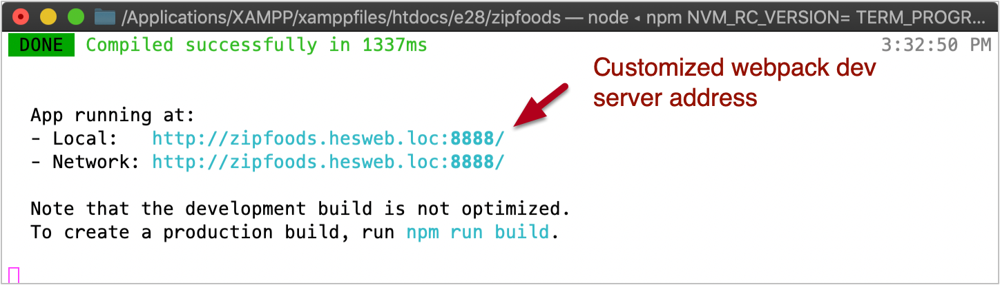

Authentication: Introduction and configuration
Before starting this note set, rebuild your e28-api install, making sure you have the latest code:
$ cd /path/to/htdocs/e28/e28-api
$ bash setup
The e28-api is preconfigured with an authentication system and a user resource.
We can utilize this system to influence and/or restrict the content the user has access to on our client application.
Our authentication system will follow a typical, stateful authentication process:
- A request is sent to the server API from the client application with a user’s login credentials (email/password).
- If the credentials are verified, the server’s response includes a Set-Cookie HTTP response header that sets a cookie in the user’s browser. This cookie will contain identification information for the user, and should be sent to the server on any subsequent requests in order to identify/authorize the user.
The cookie that is set will include a HttpOnly attribute, indicating the cookie can only be accessed by the server, not by JavaScript, mitigating the risk of cross-site scripting XSS attacks.
Additionally, a Secure attribute might also be added, indicating that the cookie can only be set if the HTTPS secure protocol (i.e. https://...) is being used, mitigating the risk of a “man in the middle” attack.
Domain requirements
In order to set up our stateful authentication system via cookies, our server API and our client application (e.g. zipfoods) need to run on the same root domain so that they can securely share cookies.
To make this happen, we’ll first configure our local setup so that...
- Our server API is running on http://e28-api.yourdomain.loc
- Our client application is running on http://zipfoods.yourdomain.loc
Note how each of these applications share the same primary domain of whatever yourdomain.loc is.
Server API domain
To get the server API running on http://e28-api.yourdomain.loc:
- Update your VirtualHosts config file so the URL
e28-api.yourdomain.locmaps to/path/to/htdocs/e28/e28-api/core/public/ - Update your computer’s hosts file so
e28-api.yourdomain.locpoints to127.0.0.1
(As a refresher, both of these steps are covered in detail in the notes on local domains.)
After completing this step, update your /common/app.js file so your Axios base URL is
pointing to this new domain:
export const axios = require('axios').create({
baseURL: process.env.VUE_APP_API_URL ?? 'http://e28-api.hesweb.dev', # ← UPDATE
responseType: 'json',
})
Client application domain
By default, when we load our client application via the webpack dev server (npm run serve),
it serves the site via a localhost address with a webpack-defined port number.
To overwrite this, create a new file called vue.config.js in the root of project with
this
code:
module.exports = {
devServer: {
host: 'zipfoods.yourdomain.loc',
port: 8888 // Some port number you expect to be open
}
}
Now, the webpack dev server should serve your site via zipfoods.yourdomain.loc:8888 (or some other port if 8888 is not available).
Server API configurations
In order for our authentication system to work between our server API and our client application, there are a handful of server-side security settings that must be configured including:
- Stateful domains: What domains should the server API allow authentication from?
- Session domain: Under what root domain should authentication cookies be set?
- Session secure cookie: Should authentication cookies be set under http requests, or just https (secure) requests?
The current settings for these configurations are output at the top of your e28-api dashboard. Example:
You can adjust these configurations via the following lines in /e28-api/core/.env
(add if
they don’t already exist):
# ==== CORS Allowed origins
# What URLs can make requests to this API
# + Separate multiple URLs by a comma
# + Include http:// and/or https://
# + Set to `*` to not restrict any URLs
CORS_ALLOWED_ORIGINS=*
# ==== Stateful domains
# What domains and/or subdomains will receive stateful API authentication
# cookies in response to succesful login requests
# + Separate multiple domains by a comma
# + Include a port if that's how the domain is accessed (e.g. localhost:8080)
# + Exclude http:// and https://
SANCTUM_STATEFUL_DOMAINS=zipfoods.hesweb.dev:8888
# ==== Session domain
# Authentication cookies will be valid under this root domain (and any of its subdomains)
# + Specify *one* domain
# + Exclude http:// and/or https://
SESSION_DOMAIN=hesweb.dev
# ==== Session secure cookie
# Authentication cookies will only be sent back if the browser has a HTTPS connection
# locally, we'll set this to false. On production, if we have https set up,
# we can/should set it to true
SESSION_SECURE_COOKIE=false
Note that the file is /e28-api/core/.env is excluded from version control; this
allows you
to set unique values in different environments (e.g. local vs. production) as needed. Here are notes
configuring this file on production: Authentication: Production.
Checklist
Before moving on, confirm the following points are true:
- Your server API is accessible via
http://e28-api.yourdomain.loc - Your client application is accessible via
http://zipfoods.yourdomain.loc:####(where####is whatever port number is being used) - When visiting your API dashboard...
- You see
zipfoods.yourdomain.loc:####(where####is whatever port number is being used) listed under Stateful domains - You see
yourdomain.loclisted under Session domain
- You see
- The base URL for Axios (set in
/common/app.js) is set tohttp://e28-api.yourdomain.loc
If everything looks good, you’re ready for the next steps: Authentication - Usage